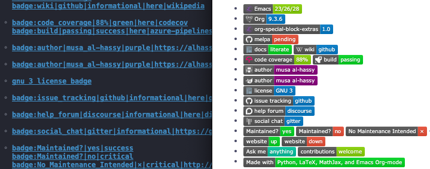

Emacs org-special-block-extras
Table of Contents
- 1. Minimal working example
- 2. 各种链接
- 3. Blocks
- 4. Latex
- 5. link here head
Examples: PDF Viewer 或 org-special-block-extras
refs: 1
1. Minimal working example
Are you excited to learn some Lisp? Yes!
Pop-quiz: How does apply work?
Answer
Syntactically, (apply f '(x0 ...
xN)) = (f x0 ... xN).
[Musa: Ain’t that cool? ]
That is, we can apply a function to a list of arguments!
Note that C-x C-e evaluates a Lisp form!
apply
2. 各种链接
xboldcolor *<pink: super
neato stuff>* -> super neato stuff
xlinkhere 本地锚点: 点击后注意 URL # 后面 内容的变化。
xicon 会显示一个主页 Icon o-link/octoicon 。
xbadge <badge: Emacs | is
awesome | blue |
https://www.google.com/search?q=hello%20world |
gnu-emacs> 导出成
xdoc doc:thread-first 在
Documentations 中声明过的，鼠标放上去会显示对应的说明。
thread-first Lisp 函数定义
family English 含义
Hussain 个人文档描述
3. Blocks
3.1. 链接(link)
3.1.1. margin
something[[margin:][documentation for
something]] is important!!!
=something° is important!!
会在 something 右上角生成一个圆圈，类似 doc 的显示其文档描述。
Example: Links, without and with explict lables
This ° works!
This look! works!
Source:
This [[margin:][hola and woah ]] works! This [[margin:look!][hola]] works!
Example: 在语句中间，使用 #+begin_margin, 没有 label
Hello this ° is super neat!
Source:
Hello this #+begin_margin Extra details about whatever it is I'm talking about. #+end_margin is super neat!
Example: 在语句中间，使用 #+begin_margin, 有 label(this)
Hello this is super neat!
Source:
Hello #+begin_margin this Extra details about whatever it is I'm talking about. #+end_margin is super neat!
margin 中还可以包含
html 元素，比如： <marquee>
标签，让文档更加丰富:
★ Example: A ‘margin’ with an ‘export’ in the middle
An HTML “marquee” ° is a scrolling piece of text.
Source:
An HTML “marquee” #+begin_margin An example is best: #+begin_export html <marquee>Catch me if you can!</marquee> #+end_export It is pronounced “mar key”. #+end_margin is a scrolling piece of text.
Example: Brief code snippet in tooltip/margin
It’s a
simple exercise to show that ℕ is fixedpoint
of Maybe.
Source:
It's a #+begin_margin simple Proof Sketch: “Squint” your eyes to see zero : ℕ and nothing : Maybe ℕ as essentially the same, and “squint” your eyes to see that suc is essentially the same as just. More formally, here's one direction: #+begin_src haskell :tangle no to : Maybe ℕ → ℕ to nothing = zero to (just n) = suc n #+end_src The rest is an arduous exercise if you don't know what's going on. #+end_margin exercise to show that ℕ is fixedpoint of Maybe.
★ Example: Lengthy ‘margin’ with multiple code blocks!
It’s a
simple exercise to show that ℕ is fixedpoint
of Maybe.
Source:
It's a #+begin_margin simple We show that there is an isomorphism; i.e., a non-lossy protocol between Maybe ℕ and ℕ in stages. First, let's recall the definitions ... in Agda ... #+begin_src haskell :tangle no :tangle no data Maybe (A : Set) : Set₁ where nothing : Maybe A just : A → Maybe A data ℕ : Set where zero : ℕ suc : ℕ → ℕ #+end_src We can show Maybe ℕ ≅ ℕ by writing two functions... #+begin_src haskell :tangle no to : Maybe ℕ → ℕ to nothing = zero to (just n) = suc n from : ℕ → Maybe ℕ from zero = nothing from (suc n) = just n #+end_src ...and, finally, checking that the two functions undo each other... #+begin_src emacs-lisp to∘from : ∀ {n} → to (from n) ≡ n to∘from n = {! try it! } from∘to : ∀ {m} → from (to m) ≡ m from∘to m = {! try it! } #+end_src This is “simple”, but involved! #+end_margin exercise to show that ℕ is fixedpoint of Maybe.
在包含代码块的 tooltips 中增加下面的样式可以让其显示的更友好
#+html: <style> pre.tooltip {color: black; background-color:Snow;} </style>
3.1.2. show
直接调用 emacs 中的变量，用这个变量的值替换在当前位置。
如：
show:user-full-name = "Zhicheng
Lee"
show:emacs-version = "29.0.50"
show 代码实现
(o-deflink show "Yield the value of the expression O-LABEL, with =GLOSSARY= being a reserved name. Example uses: show:user-full-name <show: (* 2 (+ 3 4 (- pi))) > Note that there is `elisp' links with Emacs, out of the box. However, they only serve to evaluate Lisp expressions; for example, to make “link buttons” that do useful things, as follows. [[elisp:(find-file user-init-file)][Init]] In particular, `elisp' links do not export the value of their expression. That is what we accomplish with this new `show' link type." [:face '(:underline "green") :let (o-value (if (equal o-label "GLOSSARY") (pp-to-string (mapcar #'cl-second o--docs-actually-used)) (pp-to-string (eval (car (read-from-string o-label))))) o-expr (if (equal o-label "GLOSSARY") (concat "GLOSSARY ---i.e., o--docs-actually-used" "\n\nWe erase the glossary not on the first export, but on the second export." "\nThe first export collects all citations, which are used in the second export.") o-label)) :help-echo (format (concat "Upon export, the following will be placed literally" "\n\t%s" "\nWhich is the value of the expression:\n\t%s") o-value o-expr)] (cond ((not (equal o-label "GLOSSARY")) o-value) ;; Otherwise O-LABEL is glossary, which we print in HTML & LaTeX ((equal 'html o-backend) (s-join " " (--map (format "<abbr class=\"tooltip\" title=\"%s\">%s</abbr>" (o-html-export-preserving-whitespace (cl-third it)) (cl-second it)) ;; Ignore duplicates; i.e., entries with the same name/title. (cl-remove-duplicates o--docs-actually-used :test (lambda (x y) (cl-equalp (cl-second x) (cl-second y))))))) (t (s-join "\n\n" (cl-loop for (label name doc) in o--docs-actually-used collect (format (concat "\\vspace{1em}\\phantomsection" "\\textbf{%s}\\quad" "\\label{o-glossary-%s}" "%s See page " "\\pageref{org-special-block-extras" "-glossary-declaration-site-%s}") name o-label (when doc (thread-last doc ;; preserve whitespace (s-replace "&" "\\&") ;; Hack! (s-replace " " " \\quad ") (s-replace "\n" " \\newline{\\color{white}.}"))) o-label))))))
3.1.3. kbd
一般用于组合键 [[kbd:C-c_C-c]]
C-c C-c
可以直接使用 kbd:C-c_C-c
C-c C-c
不需要加上 [[...]]
如果不想用下划线需要用 <> 包起来，如：
<kbd:C-c C-c>
C-c C-c
也是一样的
还可以自己指定提示内容： [[kbd:C-c_C-c][我是C-c C-c
组合键的说明提示信息]]
C-c C-c
kbd 的实现
(o-deflink kbd "Show keysequence O-LABEL in a nice grey button-like font, along with a tooltip of its documentation, if any. Such links do not get folded in [[bracket]] style, and are rendered as buttons within Emacs. Moreover, O-LABEL may use ‘_’ in-lieu of spaces or [[bracket]] link notation. Examples: [[kbd:C-x C-s]] ≈ <kbd: C-x C-s> ≈ kbd:C-x_C-s" [:display 'full :let (the-label (s-trim (s-replace "_" " " o-label)) lisp-func (ignore-errors (cl-second (help--analyze-key (kbd the-label) the-label))) tooltip (or o-description (ignore-errors (documentation lisp-func)) "") tooltip? (not (equal tooltip "")) style (if tooltip? "border-color: red" "") keystrokes (format "<kbd style=\"%s\">%s</kbd>" style the-label)) ;; o-description is always nil when it comes to deciding the :face. :face (list :inherit 'custom-button :box (if tooltip? "red" t)) :help-echo (format "%s ∷ %s\n%s" the-label (or lisp-func "") tooltip)] (if (equal o-backend 'latex) (format "\\texttt{%s}" the-label) (if tooltip? ;; The style=⋯ is to remove the underlying caused by <abbr>. (format "<abbr class=\"tooltip\" style=\"border: none; text-decoration: none;\" title=\"%s ∷ %s<br>%s\">%s</abbr>" the-label (or lisp-func "") (o-html-export-preserving-whitespace tooltip) keystrokes) keystrokes)))
下面的样式规则可以用来主 keystorkes 更好的显示。
(defvar o--kbd-html-setup nil "Has the necessary keyboard styling HTML beeen added?") (unless o--kbd-html-setup (setq o--kbd-html-setup t) (setq org-html-head-extra (concat org-html-head-extra " <style> /* From: https://endlessparentheses.com/public/css/endless.css */ /* See also: https://meta.superuser.com/questions/4788/css-for-the-new-kbd-style */ kbd { -moz-border-radius: 6px; -moz-box-shadow: 0 1px 0 rgba(0,0,0,0.2),0 0 0 2px #fff inset; -webkit-border-radius: 6px; -webkit-box-shadow: 0 1px 0 rgba(0,0,0,0.2),0 0 0 2px #fff inset; background-color: #f7f7f7; border: 1px solid #ccc; border-radius: 6px; box-shadow: 0 1px 0 rgba(0,0,0,0.2),0 0 0 2px #fff inset; color: #333; display: inline-block; font-family: 'Droid Sans Mono', monospace; font-size: 80%; font-weight: normal; line-height: inherit; margin: 0 .1em; padding: .08em .4em; text-shadow: 0 1px 0 #fff; word-spacing: -4px; box-shadow: 2px 2px 2px #222; /* MA: An extra I've added. */ } </style>")))
测试：
(deftest "It becomes <kbd> tags, but final symbol non-ascii *may* be ignored" [kbd direct-org-links] (⇝ (⟰ "kbd:C-u_80_-∀") "<p>\n<kbd style=\"\">C-u 80</kbd>_-∀</p>")) (deftest "[[It]] becomes <kbd> tags" [kbd square-org-links] (⇝ (⟰ "[[kbd:C-u_80_-]]") "<p>\n<kbd style=\"\">C-u 80 -</kbd></p>")) (deftest "<It> becomes <kbd> tags, and surrounding space is trimmed" [kbd angle-org-links] (⇝ (⟰ "<kbd: C-u 80 - >") "<p>\n<kbd style=\"\">C-u 80 -</kbd></p>")) (deftest "It has a tooltip documenting the underlying Lisp function, when possible" [kbd tooltip] (⇝ (⟰ "<kbd: M-s h .>") "<abbr class=\"tooltip\"" (* anything) "Highlight each instance of the symbol at point.<br>Uses the next face from ‘hi-lock-face-defaults’ without prompting,<br>unless you use a prefix argument.<br>Uses ‘find-tag-default-as-symbol-regexp’ to retrieve the symbol at point.<br><br>This uses Font lock mode if it is enabled; otherwise it uses overlays,<br>in which case the highlighting will not update as you type. The Font<br>Lock mode is considered ''enabled'' in a buffer if its ‘major-mode’<br>causes ‘font-lock-specified-p’ to return non-nil, which means<br>the major mode specifies support for Font Lock." (* anything) "<kbd style=\"border-color: red\">M-s h .</kbd></abbr>"))
3.1.4. doc
文档类型，内容定义在 Documentations 中, 如： s-replace-all
也可以通过 #+begin_documentation doc-name :label
label-name 来定义文档内容。
之后可以 doc:label-name doc-name 也可以
[[doc:label-name][自定义显示内容 替换label-name]]
自定义显示内容
替换label-name
或者没有 label-name 时候直接使用
doc-name, doc:doc-name,
doc-name, 当没有
label-name 时，它其实也是有值的，默认是
doc-name 将空格替换成 ’_’(下划线)，更多 可以查看
o--documentation 。
Full Example
User enters …
#+begin_documentation Existential Angst :label "ex-angst" A negative feeling arising from freedom and responsibility. Also known as 1. Existential Dread, and 2. Existential Anxiety. Perhaps a distraction, such as visiting W3Schools, may help ;-) Then again, coding can be frustrating at times, maybe have a slice of pie with maths by reading “$ei×π + 1 = 0$” as a poem ;-) #+end_documentation
Then…
doc:ex-angst gives us
Existential Angst, or using a description:
“existence is pain”? (
[[doc:ex-angst][“existence is pain”?]]
)
Existential Angsty
org-special-src-blocks 包的作者自己的 documentation library:
or
.
3.1.5. colour
带颜色文字， [[blue:content]]
如： blue, red, green
可以执行 M-x: list-colors-display
查看有哪些支持的颜色。
可结合删除线等使用，如： delete
line, italic, underline, bold
也可以使用 [[color:#eee][this is content]]
来指定其它的颜色值, this is
content 。
3.1.6. remark
[[remark:Author][content]]
如：
[Jasim: Hello, where are you? ]
带 replace 的 remark: [[remark:Qasim][/‘j’/
#+replacewith: /‘q’/]]
[Qasim: Replace: ‘j’ With: ‘q’ ]
3.1.7. ref
一种代码块中的锚点链接
在代码块中的行后面增加 ref:name ，如： 1 然后使用
[[(name)]] 可生成链接直 接定位到代码块中的那一行，非常方便。
3.1.8. link-here
创建一个错点链接 , 点击它后注意链接变成了
http://127.0.0.1:8080/posts/emacs_org_special_src_blocks.html#name
点击该链接会转向 URL #name, 一般配合 octoicon:x
图标来使用， \(x\) 可以是 home, link, mail, report, tag,
clock 中的任意一个： , , , , ,
上面 6 种 icons 的实现方式
下面的 SVGs 来自 https://primer.style/octicons/
(defvar o--supported-octoicons (-partition 2 '( home "<svg xmlns=\"http://www.w3.org/2000/svg\" viewBox=\"0 0 16 16\" width=\"16\" height=\"16\"><path fill-rule=\"evenodd\" d=\"M16 9l-3-3V2h-2v2L8 1 0 9h2l1 5c0 .55.45 1 1 1h8c.55 0 1-.45 1-1l1-5h2zm-4 5H9v-4H7v4H4L2.81 7.69 8 2.5l5.19 5.19L12 14z\"></path></svg>" link "<svg xmlns=\"http://www.w3.org/2000/svg\" viewBox=\"0 0 16 16\" width=\"16\" height=\"16\"><path fill-rule=\"evenodd\" d=\"M4 9h1v1H4c-1.5 0-3-1.69-3-3.5S2.55 3 4 3h4c1.45 0 3 1.69 3 3.5 0 1.41-.91 2.72-2 3.25V8.59c.58-.45 1-1.27 1-2.09C10 5.22 8.98 4 8 4H4c-.98 0-2 1.22-2 2.5S3 9 4 9zm9-3h-1v1h1c1 0 2 1.22 2 2.5S13.98 12 13 12H9c-.98 0-2-1.22-2-2.5 0-.83.42-1.64 1-2.09V6.25c-1.09.53-2 1.84-2 3.25C6 11.31 7.55 13 9 13h4c1.45 0 3-1.69 3-3.5S14.5 6 13 6z\"></path></svg>" mail "<svg xmlns=\"http://www.w3.org/2000/svg\" viewBox=\"0 0 14 16\" width=\"14\" height=\"16\"><path fill-rule=\"evenodd\" d=\"M0 4v8c0 .55.45 1 1 1h12c.55 0 1-.45 1-1V4c0-.55-.45-1-1-1H1c-.55 0-1 .45-1 1zm13 0L7 9 1 4h12zM1 5.5l4 3-4 3v-6zM2 12l3.5-3L7 10.5 8.5 9l3.5 3H2zm11-.5l-4-3 4-3v6z\"></path></svg>" report "<svg xmlns=\"http://www.w3.org/2000/svg\" viewBox=\"0 0 16 16\" width=\"16\" height=\"16\"><path fill-rule=\"evenodd\" d=\"M0 2a1 1 0 011-1h14a1 1 0 011 1v9a1 1 0 01-1 1H7l-4 4v-4H1a1 1 0 01-1-1V2zm1 0h14v9H6.5L4 13.5V11H1V2zm6 6h2v2H7V8zm0-5h2v4H7V3z\"></path></svg>" tag "<svg xmlns=\"http://www.w3.org/2000/svg\" viewBox=\"0 0 15 16\" width=\"15\" height=\"16\"><path fill-rule=\"evenodd\" d=\"M7.73 1.73C7.26 1.26 6.62 1 5.96 1H3.5C2.13 1 1 2.13 1 3.5v2.47c0 .66.27 1.3.73 1.77l6.06 6.06c.39.39 1.02.39 1.41 0l4.59-4.59a.996.996 0 000-1.41L7.73 1.73zM2.38 7.09c-.31-.3-.47-.7-.47-1.13V3.5c0-.88.72-1.59 1.59-1.59h2.47c.42 0 .83.16 1.13.47l6.14 6.13-4.73 4.73-6.13-6.15zM3.01 3h2v2H3V3h.01z\"></path></svg>" clock "<svg xmlns=\"http://www.w3.org/2000/svg\" viewBox=\"0 0 14 16\" width=\"14\" height=\"16\"><path fill-rule=\"evenodd\" d=\"M8 8h3v2H7c-.55 0-1-.45-1-1V4h2v4zM7 2.3c3.14 0 5.7 2.56 5.7 5.7s-2.56 5.7-5.7 5.7A5.71 5.71 0 011.3 8c0-3.14 2.56-5.7 5.7-5.7zM7 1C3.14 1 0 4.14 0 8s3.14 7 7 7 7-3.14 7-7-3.14-7-7-7z\"></path></svg>")) "An association list of supported OctoIcons. Usage: (cadr (assoc 'ICON o--supported-octoicons))")
(o-deflink octoicon "Show an OctoIcon: home, link, mail, report, tag, clock" [:help-echo "Show an OctoIcon: home, link, mail, report, tag, clock"] (unless (member (intern o-label) '(home link mail report tag clock)) (error "octoicon:%s ⇒ This label is not supported!" o-label)) (if (not (equal o-backend 'html)) "" (s-collapse-whitespace (cadr (assoc (intern o-label) o--supported-octoicons))))) (o-deflink link-here "Export a link to the current location in an Org file." [:help-echo (format "This is a local anchor link named “%s”" path)] (if (not (equal o-backend 'html)) "" (format (s-collapse-whitespace "<a class=\"anchor\" aria-hidden=\"true\" id=\"%s\" href=\"#%s\">%s</a>") o-label o-label (cadr (assoc 'link o--supported-octoicons)))))
Source
link-here:example-location (Click the icon and see the URL has changed!)
Result
(Click the icon and see the URL has changed!)
测试
(deftest "It works as expected: We have an anchor with the given ID, and the default SVG chain icon." [link:here] (⇝ (⟰ "link-here:example-location (Click the icon and see the URL has changed!)") "<a class=\"anchor\" aria-hidden=\"true\" id=\"example-location\" href=\"#example-location\"><svg" (* anything) "</svg></a> (Click the icon and see the URL has changed!)" (* anything)))
3.1.9. badge
badge:left|right|right-bg-color|right-link-url|left-icon
或
[[badge:left|right|right-bg-color|right-link-url|left-icon]]
至少要有 left 和 right, 即
badge:left|right, ,
当有
right-link-url 时右边是可点击的。
Shields.io: Quality metadata badges for open source projects

github 仓库的 badge 生成：
自定义 badge:
Shields.io: Quality metadata badges for open source projects
Source
What are badges? badge:Let_me_google_that|for_you!|orange|https://lmgtfy.app/?q=badge+shields.io&iie=1|Elixir or [[badge: Let me google that | for you! |orange|https://lmgtfy.app/?q=badge+shields.io&iie=1 |Elixir]] or badge:Let_me_*not*_google_that|for_you
Result
What are badges?
or
or
测试
(deftest "It works when all 5 arguments are provided" [badge] (⇝ (⟰ "badge:Let_me_google_that|for_you!|orange|https://lmgtfy.app/?q=badge+shields.io&iie=1|Elixir") "<a href=\"https://lmgtfy.app/?q=badge+shields.io&iie=1\">" "<img src=\"https://img.shields.io/badge/Let_me_google_that-for_you%21-orange?logo=Elixir\"></a>")) (deftest "It works when we use [[link]] syntax with generous spaces and newlines" [badge] (⇝ (⟰ "[[badge: Let me google that | for you! | orange | https://lmgtfy.app/?q=badge+shields.io&iie=1|Elixir]]") "<a href=\"https://lmgtfy.app/?q=badge+shields.io&iie=1\">" (* anything) "<img src=\"https://img.shields.io/badge/Let%20me%20google%20that-for%20you%21-orange?logo=Elixir\">")) (deftest "It works when only the first 2 arguments are provided; asterisks are passed unaltered into the first argument" [badge] (⇝ (⟰ "badge:Let_me_*not*_google_that|for_you") "<img src=\"https://img.shields.io/badge/Let_me_%2Anot%2A_google_that-for_you-nil?logo=nil\">")) (deftest "It works when all 5 arguments are provided - URL ‘here’ makes it a local link" [badge] (⇝ (⟰ "badge:key|value|informational|here|Elixir") "<a id=\"key\" href=\"#key\">" "<img src=\"https://img.shields.io/badge/key-value-informational?logo=Elixir\"></a>")) (deftest "We can use spaces, commas, dashes, and percentage symbols in the first argument" [badge] (⇝ (⟰ "badge:example_with_spaces,_-,_and_%|points_right_here|orange|here") "<a id=\"example_with_spaces,_-,_and_%\" href=\"#example_with_spaces,_-,_and_%\">" "<img src=\"https://img.shields.io/badge/example_with_spaces%2C_--%2C_and_%25-points_right_here-orange?logo=nil\"></a>")) (deftest "It works when only first 2 arguments are given: Default colour & logo are green & no logo shown" [badge] (⇝ (⟰ "badge:key|value") "<img src=\"https://img.shields.io/badge/key-value-nil?logo=nil\">")) (deftest "When only a key is provided, the value slot is shown as an empty green stub" [badge] (⇝ (⟰ "badge:key") "<img src=\"https://img.shields.io/badge/key--nil?logo=nil\">")) (deftest "When only a value is provided, only the value is shown in a default green ---no stub for the missing key, yay" [badge] (⇝ (⟰ "badge:|value") "<img src=\"https://img.shields.io/badge/-value-nil?logo=nil\">")) (deftest "It's only a green stub when provided with an empty key and empty value" [badge] (⇝ (⟰ "badge:||green") "<img src=\"https://img.shields.io/badge/--green?logo=nil\">")) (deftest "It's only a green stub when we use a totally [[badge:]]" [badge] (⇝ (⟰ "[[badge:]]") "<img src=\"https://img.shields.io/badge/--nil?logo=nil\">"))
更多样例
-
<=
badge:key|value|informational|here|Elixir
点击之后会跳转到 #key 锚点处。
-
<=
badge:example_with_spaces,_-,_and_%|points_right_here|orange|here <=
badge:key|value<=
badge:empty_value||informational没有 value 的情况<=
badge:|value没有 key 的情况- badge: ||green <=
badge:||green没 key 也没 value, 或<=
[[badge:]]
通用语法
reddit-subscribe-to:exact-name-of-a-subreddit


badge:your_key|its_neato_value|some_url|a_logo_as_shown_below [[badge: your key | its neato value | some url | a logo as shown below]] reddit-subscribe-to:exact-name-of-a-subreddit github-stars:user-name/repository-name github-watchers:user-name/repository-name github-forks:user-name/repository-name github-followers:user-name twitter-follow:user-name tweet:url
颜色样例
Source
+ badge:|red|red badge:|critical|critical + badge:|blue|blue badge:|informational|informational + badge:|brightgreen|brightgreen badge:|success|success + badge:|orange|orange badge:|important|important + badge:|lightgrey|lightgrey badge:|inactive|inactive + badge:|green|green + badge:|yellowgreen|yellowgreen + badge:|yellow|yellow + badge:|blueviolet|blueviolet + badge:|ff69b4|ff69b4 + badge:|9cf|9cf + ... Consult https://htmlcolorcodes.com/ to see the HEX code of any other colour you wish to use; e.g., badge:|1d8348|1d8348
Result
- …
Consult https://htmlcolorcodes.com/
to see the HEX code of any other colour you wish
to use; e.g.,
badge icons
- “Fire”
-
Elixir
tinder
codeigniter
prometheus
sparkpost
- “Messaging”
-
quip
WeChat
google-hangouts
hackhands
google-messages
Slack
- “Emacs”
-
gnu-emacs
spacemacs
vim
neovim
gnu
github
acm
wikipedia
microsoft-excel
microsoft-word
dropbox
google-scholar
google
google-translate
ghost
helm
apache-openoffice
buffer
adobe-fonts
google-calendar
- “Social”
-
google-cast
youtube
discord
facebook
whatsapp
skype
reddit
stack-overflow
stack-exchange
linkedin
twitter
jabber
- “Lightbulb”
-
lighthouse
google-keep
minds
- “Programming”
-
git
ruby
scala
OCaml
javascript
gnu-bash
powershell
LaTeX
java
kotlin
haskell
coffeescript
purescript
rust
typescript
css3
python
c
clojure
lua
adobe-acrobat-reader
perl
- “Miscellaneous”
-
read-the-docs
buy-me-a-coffee
gimp
mega
nintendo-3ds
paypal
pinboard
mocha
Gitea
instacart
openStreetMap
amazon
svg
rss
swagger
pastebin
skyliner
iTunes
gulp
leaflet
youtube-gaming
GIMP
atom
流行的通用库 badges
-
src
badge:Emacs|23/26/28|green|https://www.gnu.org/software/emacs|gnu-emacs -
src
badge:Org|9.3.6|blue|https://orgmode.org|gnu -
src
[[badge:org-special-block-extras|1.0|informational|https://alhassy.github.io/org-special-block-extras/README.html|Gnu-Emacs][org-special-block-extras badge]] -
src
[[badge:melpa|pending|critical|https://github.com/alhassy/emacs.d#use-package-the-start-of-initel|github][melpa badge]] -
src
[[badge:docs|literate|success|https://github.com/alhassy/emacs.d#what-does-literate-programming-look-like|read-the-docs][read-the-docs badge]]src
badge:wiki|github|informational|here|wikipedia -
src
badge:code_coverage|88%|green|here|codecovsrc
badge:build|passing|success|here|azure-pipelines -
src
badge:author|musa_al-hassy|purple|https://alhassy.github.io/|nintendo-3ds -
src
badge:author|musa_al-hassy|purple|https://alhassy.github.io/|gimp -
src
[[badge:license|GNU_3|informational|https://www.gnu.org/licenses/gpl-3.0.en.html|read-the-docs][gnu 3 license badge]] -
src
badge:issue_tracking|github|informational|here|github -
src
badge:help_forum|discourse|informational|here|discourse -
src
badge:social_chat|gitter|informational|https://gitter.im/explore|gitter -
src
badge:Maintained?|yes|successsrc
badge:Maintained?|no|criticalsrc
badge:No_Maintenance_Intended|×|critical|http://unmaintained.tech/ -
src
badge:website|up|successsrc
badge:website|down|critical -
src
badge:Ask_me|anything|1abc9csrc
badge:contributions|welcome|green|https://github.com/alhassy/org-special-block-extras/issues -
src
badge:Made_with|Python,_LaTeX,_MathJax,_and_Emacs_Org-mode|1f425
3.2. 替换内容(rename)
Define a block rename so that the following examples behave as shown.
Hints
- It can be done in less than 10 lines of Lisp.
- First, try to
s-replace-all the substitution
'(("Allah" . "God") ("Yacoub". "Jacob") ("Yusuf" . "Joseph"))only. - Then take out such hard-coded substitutions … these functions may be helpful: --map / -map, s-split, s-trim
Examples
#+begin_rename "Allah to God, Yacoub to Jacob, Yusuf to Joseph" Quran 12-4: *_Yusuf_* said to his father ( _*Yacoub*_ ), /“O my father, indeed I have seen (in a dream) eleven stars and the sun and the moon; I saw them prostrating to me.”/ #+end_rename
Yields…
Quran 12-4: Joseph said to his father ( Jacob ), “O my father, indeed I have seen (in a dream) eleven stars and the sun and the moon; I saw them prostrating to me.”
Source
[[rename:Pharaoh to Firaun, Joseph to Yusuf][Genesis 41-17: Pharaoh said unto Joseph, /In my dream, behold, I stood upon the bank of the river/ …]]
Result
Genesis 41-17: Firaun said unto Yusuf, In my dream, behold, I stood upon the bank of the river …
Solution
Did you actually try? Maybe see the ‘hints’ above!
Solution, for real
(o-defblock rename (list "") nil "Perform the given LIST of substitutions on the text. The LIST is a comma separated list of ‘to’ separated symbols. In a link, no quotes are needed." (s-replace-all (--map (cons (car it) (cadr it)) (--map (s-split " to " (s-trim it)) (s-split "," list))) contents))
3.3. 挡板(spoiler)
可以通过 #+begin_spoiler :left "[" :right "]"
的 left&right 属性来修改左右两边匹 配符号，在符号内的内容会被一个纯色的 div
盖住，当鼠标放上去的时候显示真正的内容。
$+begin_spoiler pink 后面加上颜色名，可直接修改纯色 div
的背景色。
Define a block spoiler so that the following examples behave as shown.
Hints
- It can be done in less than 10 lines of Lisp.
-
You will need the following style setup …
#+html_head: <style> #+html_head: .spoiler {color: grey; background-color:grey;} #+html_head: .spoiler:hover {color: black; background-color:white;} #+html_head: <style> # Example use: <span class="spoiler"> test </span> - Escape HTML snippets by enclosing them in
@@html: … @@—as discussed above in the introduction to special blocks. - The functions s-replace-regexp and regexp-quote may be useful.
Examples
#+begin_export html
<style> #g155 {color: grey; background-color:grey;}
#g155:hover {color: black; background-color:white;} </style>
#+end_export
@@html:<span id="g155"> Yusuf </span>@@ said to his father @@html:<span id="g155"> Yacoub </span>@@, /“O my father, indeed I have seen
@@html:<span id="g155"> eleven stars </span>@@ and @@html:<span id="g155"> the sun and the moon </span>@@; I saw them prostrating to me.”/
#+begin_export html
#+end_export
Yusuf said to his father Yacoub , “O my father, indeed I have seen eleven stars and the sun and the moon ; I saw them prostrating to me.”
#+begin_export html
<style> #g157 {color: grey; background-color:grey;}
#g157:hover {color: black; background-color:white;} </style>
#+end_export
@@html:<span id="g157"> Yusuf </span>@@ said to his father @@html:<span id="g157"> Yacoub </span>@@, /“O my father, indeed I have seen
@@html:<span id="g157"> eleven stars </span>@@ and @@html:<span id="g157"> the sun and the moon </span>@@; I saw them prostrating to me.”/
#+begin_export html
#+end_export
Yusuf said to his father Yacoub , “O my father, indeed I have seen eleven stars and the sun and the moon ; I saw them prostrating to me.”
Solution
Did you actually try? Maybe see the ‘hints’ above!
Solution, for real
Rather than having auxiliary
#+html_head: styling settings, we have
moved the styling information to the
defblock declaration and are
using the main argument to colour the spoiler
—which defaults to grey ;-)
For example, the next segment of text is in a
block #+begin_spoiler pink …
Yusuf said to his father Yacoub , “O my father, indeed I have seen eleven stars and the sun and the moon ; I saw them prostrating to me.”
Whereas, the following begins with
#+begin_spoiler orange …
Yusuf said to his father Yacoub , “O my father, indeed I have seen eleven stars and the sun and the moon ; I saw them prostrating to me.”
(o-defblock spoiler (color "grey") (left "((" right "))") "Hide text enclosed in double parens ((like this)) as if it were spoilers. LEFT and RIGHT may be other kinds of delimiters. The main argument, COLOR, indicates which color to use. For LaTeX, this becomes “fill in the blanks”, with the answers in the footnotes." (if (equal backend 'latex) (s-replace-regexp (concat (regexp-quote left) "\\(.*?\\)" (regexp-quote right)) "@@latex:\\\\fbox{\\\\phantom{\\1}}\\\\footnote{\\1}@@" contents) (-let [id (gensym)] (concat ;; In HTML, a ‘style’ can be, technically, almost anywhere... (format "<style> #%s {color: %s; background-color:%s;} #%s:hover {color: black; background-color:white;} </style> " id color color id) (s-replace-regexp (concat (regexp-quote left) "\\(.*?\\)" (regexp-quote right)) (format "@@html:<span id=\"%s\"> \\1 </span>@@" id) contents)))))
There’s actually a problem with this ‘solution’; can you find it?
Hint: Try the link form and see how it breaks!
JS 方式实现变色：
Details
An alternative would be to use JS with mouse parameters; e.g.:
TextPossibly using ID’s as the current working solution above.
3.4. 问答(solution)
Solution
Did you actually try? Maybe see the ‘hints’ above!
Solution, for real
The answer is 2.
If you’re interested in such ‘fundamental’ questions, consider reading Russel and Whitehead’s Principa Mathematica ;-)
实现
(o-defblock solution (title "Solution") (reprimand "Did you actually try? Maybe see the ‘hints’ above!" really "Solution, for real") "Show the answers to a problem, but with a reprimand in case no attempt was made." (o-thread-blockcall raw-contents (details really :title-color "red") (box reprimand :background-color "blue") (details title)))
3.5. 折叠(details) xblockfold
xblockfold
$+begin_details 折叠块，里面可以嵌套其它 blocks.
测试代码
function test() { console.log('xxx') } test()
修改标题颜色 :title-color "red"
NAME
name
contents
实现
(o-defblock details (title "Details") (title-color "green") "Enclose contents in a folded up box, for HTML. For LaTeX, this is just a boring, but centered, box. By default, the TITLE of such blocks is “Details” and its TITLE-COLOR is green. In HTML, we show folded, details, regions with a nice greenish colour. In the future ---i.e., when I have time--- it may be prudent to expose more aspects as arguments, such as ‘background-color’. " (format (pcase backend (`latex "\\begin{quote} \\begin{tcolorbox}[colback=%s,title={%s},sharp corners,boxrule=0.4pt] %s \\end{tcolorbox} \\end{quote}") (_ "<details class=\"code-details\" style =\"padding: 1em; background-color: #e5f5e5; /* background-color: pink; */ border-radius: 15px; color: hsl(157 75% 20%); font-size: 0.9em; box-shadow: 0.05em 0.1em 5px 0.01em #00000057;\"> <summary> <strong> <font face=\"Courier\" size=\"3\" color=\"%s\"> %s </font> </strong> </summary> %s </details>")) title-color title contents))
#+html: <style> summary:hover {background:pink;} </style>
增加 header hover 鼠标放上来试试
test…
3.6. 源码-结果(org-demo) xblocklr
xblocklr org-demo block, 左边源码，右边输出结果
Source
/italics/ and _underline_
$e^{i \times \pi} + 1 = 0$
Result
italics and underline
\(e^{i \times \pi} + 1 = 0\)
org-demo block, 上边源码，下边输出结果
Source
/italics/ and _underline_
$e^{i \times \pi} + 1 = 0$
Result
italics and underline
\(e^{i \times \pi} + 1 = 0\)
Source
\[ \sin^2 x + \cos^2 x = \int_\pi^{\pi + 1} 1 dx = {3 \over 3} \]
Result
\[ \sin^2 x + \cos^2 x = \int_\pi^{\pi + 1} 1 dx = {3 \over 3} \]
实现
(o-defblock org-demo nil (source "Source" result "Result" source-color "cyan" result-color "cyan" style "parallel" sep (if (equal backend 'html) "@@html:<p><br>@@" "\n\n\n\n") ) "Output the CONTENTS of the block as both parsed Org and unparsed. Label the source text by SOURCE and the result text by RESULT finally, the source-result fragments can be shown in a STYLE that is either “parallel” (default) or “sequential”. SEP is the separator; e.g., a rule ‘<hr>'. " (-let [text (concat ;; Source (thread-last raw-contents (format (if (equal backend 'html) "<div ><pre class=\"src src-org\">%s</pre></div>" "\n\\begin{verbatim}\n%s\n\\end{verbatim}")) org-export (o--blockcall box source :background-color source-color) org-export) ;; Separator sep ;; Result (thread-last raw-contents (o--blockcall box result :background-color result-color) org-export))] (if (equal style "parallel") (o--blockcall parallel "2" :bar nil text) (concat "#+end_export\n" text "\n#+begin_export"))))
3.6.1. 调整显示范围
Using a mixture of \frac and
\displaystyle, define a block
tree so that the following examples behave as
shown. Hint:
org-list-to-lisp and
with-temp-buffer may be useful ;-)
Programming ≈ Proving
Source
#+begin_tree + Function Application :: f(a) : B - a : A - f : A → B + Modus Ponens :: q - p - p ⇒ q #+end_tree
Result
\[\frac{\displaystyle \qquad a : A \qquad f : A → B }{f(a) : B}[\text{Function Application}]\]\[\frac{\displaystyle \qquad p \qquad p ⇒ q}{q}[\text{Modus Ponens}]\]Solution
Did you actually try? Maybe see the ‘hints’ above!
Solution, for real
(defun o--list-to-math (lst) "Get a result LST from ORG-LIST-TO-LISP and render it as a proof tree." (cond ((symbolp lst) "") ((symbolp (car lst)) (o--list-to-math (cadr lst))) (t (-let* (((conclusion₀ children) lst) ((name named?) (s-split " :: " conclusion₀)) (conclusion (or named? conclusion₀))) (if (not children) (if named? (format "\\frac{}{%s}[%s]" conclusion name) conclusion) (format "\\frac{\\displaystyle %s}{%s}%s" (s-join " \\qquad " (mapcar #'o--list-to-math children)) conclusion (if named? (format "[\\text{%s}]" name) ""))))))) (o-defblock tree (main-arg) nil "Write a proof tree using Org-lists. To get premises₀ … premisesₙ ────────────────────────────[ reason ] conclusion You type #+begin_tree + reason :: conclusion - premises₀ - premises₁ ⋮ - premisesₙ #+end_tree Where each premisesᵢ may, recursively, also have named reasons and (indented) child premises of its own. If there are multiple trees, they are shown one after the other. The text in this block should be considered LaTeX; as such, Org markup is not recognised. A proof tree, derivation, is then just a deeply nested itemisation. For instance, assuming P = Q(X), X = Y, Q(Y) = R, the following proves P = R. #+begin_tree + Trans :: P = R - P = Q(X) + ✓ - Trans :: Q(X) = R + Trans :: Q(X) = Q(Y) - Refl :: Q(X) = Q(X) + ✓ - Leibniz :: Q(X) = Q(Y) + X = Y - ✓ + Sym :: Q(Y) = R - R = Q(Y) - ✓ #+end_tree" (s-join "" (--map (format "\\[%s\\]" (o--list-to-math it)) (cdr (with-temp-buffer (insert raw-contents) (goto-char (point-min)) (org-list-to-lisp))))))
For more on these ‘proof trees’, see ‘Natural Logic’ by Neil Tennant.
\[\] (Warning! For MathJax to
activate, you should have some math $...$
somewhere besides the tree blocks;
just \[\] suffices. )
3.7. 多列(parallel) xblockcol
xblockcol
Left
Left
Middle 1
Middle 2
Right
Right
包含在 box 里面：
垂直平分的 blocks
模板
#+begin_parallel 2 :bar yes-or-any-other-text X #+columnbreak: Y Z #+end_parallel
效果
X
Y
Z
3.8. 重复的内容(stutter) xblockrep
xblockrep
[[stutter:5][woah, I'm repeated 5 times!]]#+begin_stutter nn 表示要重复多少次
重复 stutter
[[stutter:5][woah, I'm repeated 5
times!]]
woah, I’m repeated 5 times!woah, I’m repeated 5 times!woah, I’m repeated 5 times!woah, I’m repeated 5 times!woah, I’m repeated 5 times!
重复的 blocks
#+begin_stutter 2 words more words #+end_stutter
words
more words
words
more words
Solution
Did you actually try? Maybe see the ‘hints’ above!
Solution, for real
(o-defblock stutter (reps 2) nil "Output the CONTENTS of the block REPS many times" (-let [num (if (numberp reps) reps (string-to-number reps))] (s-repeat num contents)))
3.9. 源码块中的锚点(name)
1: int tot = 1; 2: for (int i = 0; i != 10; i++) 3: tot *= i; 4: printf("The factorial of 10 is %d", tot);
注意右边的 (ref:start)
int tot = 1; \(\ref:start)
for (int i = 0; i != 10; i++) \(\ref:loop)
tot *= i; \(\ref:next)
printf("The factorial of 10 is %d", tot);
然后在文章中可通过 [[(start)]] 在当前位置(1)生成一个链接，点击链接可以跳到指
定的位置，在 org-file 中可光标在链接上的时候回车会直接跳转到代码中指定行。
如果增的 -r 选项 [[(name)]] 中的
name 会变成代码中对应的行数字，如： (start) 导出后变成
(1) 。
3.10. 备注(remark)
“Editor Comments” are intended to be top-level first-class comments in an article that are inline with the surrounding text and are delimited in such a way that they are visible but drawing attention. I first learned about this idea from Wolfram Kahl —who introduced me to Emacs many years ago. We
In LaTeX, a remark appears inline with the text surrounding it. #+begin_remark Bobert org-mode is dope, yo! #+replacewith: Org-mode is essentially a path toward enlightenment. #+end_remark Unfortunately, in the HTML rendition, the remark is its own paragraph and thus separated by new lines from its surrounding text.
Results
In LaTeX, an remark appears inline with
the text surrounding it.
[Bobert: Replace:
org-mode is dope, yo!
With:Org-mode is essentially a path toward enlightenment.
]导出成 HTML 之后，上面的每一行都被渲染成了 <p>
标签，所以独占了一行，不是很美观。
Example: 没有任何选项
[Editor Remark:
Please change this section to be more, ya know, professional.
]Source:
#+begin_remark Please change this section to be more, ya know, professional. #+end_remark
Example: 只提供作者名
[Bobert:
Please change this section to be more, ya know, professional.
]Source:
#+begin_remark Bobert Please change this section to be more, ya know, professional. #+end_remark
Example: 没有内容
[Bobert: ]
Example: With a “#+replacewith:” clause
[Editor Remark: Replace:
The two-dimensional notation; e.g., \(\sum_{i = 0}^n i^2\)
With:A linear one-dimensional notation; e.g., \((\Sigma i : 0..n \;\bullet\; i^2)\)
]Source:
#+begin_remark The two-dimensional notation; e.g., $\sumi = 0^n i^2$ #+replacewith: A linear one-dimensional notation; e.g., $(\Sigma i : 0..n \;\bullet\; i^2)$ #+end_remark
Example: Possibly “malformed” replacement clauses
Forgot the thing to be replaced…
[Editor Remark: Replace: With:
A linear one-dimensional notation; e.g., \((\Sigma i : 0..n \;\bullet\; i^2)\)
]Forgot the new replacement thing…
[Editor Remark: Replace:
The two-dimensional notation; e.g., \(\sum_{i = 0}^n i^2\)
With: ]Completely lost one’s train of thought…
[Editor Remark: Replace: With: ]
Source:
#+begin_remark #+replacewith: #+end_remark
Example: Terse remarks via links
[[edcomm:Jasim][Hello, where are
you?]]
[Jasim: Hello, where are you? ]
The #+replacewith: switch —and usual
Org markup— also works with these links:
[[remark:Qasim][/‘j’/ #+replacewith:
/‘q’/]]
[Qasim: Replace: ‘j’ With: ‘q’ ]
\#+begin_box Example: Terse remarks via links \#+begin_parallel :bar t [[edcomm:Jasim][Hello, where are you?]] #+html: <br> Hello, where are you? \#+end_parallel ------- \#+begin_parallel :bar t The #+replacewith: switch ---and usual Org markup--- also works with these links: @@html: <br>@@ [[remark:Qasim][/‘j’/ #+replacewith: /‘q’/]] #+html: <br> /‘j’/ #+replacewith: /‘q’/ \#+end_parallel \#+end_box
所有的 comments, remarks 都可以通过在文件头增加下面一行隐藏：
#+bind: o-hide-editor-comments t
同时需要开启：
(setq org-export-allow-bind-keywords t)
3.11. test
The sum of the first $n$ natural numbers is $\sum_{i = 0}^n i = {n × (n + 1)
\over 2}$. Note that $n × (n + 1)$ is even.
[[rremark:Jasim Jameson][Why are you taking about “$\mathsf{even}$” here?]]
#+begin_export html
<strong style="color: green;">Bobbert Barakallah:
#+end_export
I was trying, uh ...
Yeah, to explain that ${\large n × (n + 1) \over 2}$ is always an integer.
#+begin_export html
Thank-you for pointing this out!</strong>
#+end_export
Hence, we only need to speak about whole numbers.
[[rremark:][Then please improve your transition sentences.]]
The sum of the first \(n\) natural numbers is \(\sum_{i = 0}^n i = {n × (n + 1) \over 2}\). Note that \(n × (n + 1)\) is even. Jasim Jameson: Why are you taking about “\(\mathsf{even}\)” here?( Aim for success! )
Bobbert Barakallah:I was trying, uh …
Yeah, to explain that \({\large n × (n + 1) \over 2}\) is always an integer.
Thank-you for pointing this out!Hence, we only need to speak about whole numbers. Jasim Jameson: Then please improve your transition sentences.( Aim for success! )
(thread-blockcall raw-contents (box name) (details (upcase name) :title-color "green")
4. Latex
Larger example:
\Sigma
Latex 语法增加颜色({\color{red} x})：
\({\color{red}x}\)
block 类型： latex_definitions
‘latex-definitions’ Implementation
(o-defblock latex-definitions nil nil "Declare but do not display the CONTENTS according to the BACKEND." (format (pcase backend ('html "<p style=\"display:none\">\\[%s\\]</p>") (_ "%s")) raw-contents))
(defun o--latex-definitions (backend contents) "Declare but do not display the CONTENTS according to the BACKEND." (cl-loop for (this that) in (-partition 2 '("<p>" "" "</p>" "" "\\{" "{" "\\}" "}")) do (setq contents (s-replace this that contents))) (format (pcase backend ('html "<p style=\"display:none\">\\[%s\\]</p>") (_ "%s")) contents))
- Org escapes
{,}in LaTeX export, so we need to ‘unescape’ them. This is clearly a hack.
#+begin_latex-definitions 定义左括号和右括号:
\def\LL{\color{violet}(} \def\RR{\color{violet})}
然后就可以使用 \LL a + 1 \RR 语法来得到一个带有颜色 Latex
中的括号 \(\LL\) 和 \(\RR\)
Source
$$
{\color{teal}\bigoplus}
_{ {\color{violet} x}
= {\color{red} a}}
^{\color{cyan} b}
{\color{brown}{\,f\, x}}
\quad=\quad
{\color{brown}{f\,\LL {\color{red} a} \RR}}
\;{\color{teal}\oplus}\; {\color{brown}{f \, \LL a + 1 \RR }}
\;{\color{teal}\oplus}\; {\color{brown}{f \, \LL a + 2 \RR }}
\;{\color{teal}\oplus}\; \cdots
\;{\color{teal}\oplus}\; {\color{brown}{f \, \LL {\color{cyan} b} \RR}}
$$
| [[teal:⊕]] | /Loop sequentially with loop-bodies fused using [[teal:⊕][⊕]]/ |
| /[[violet:x]]/ | /Use [[violet:x][x]] as the name of the current element/ |
| /[[red:a]]/ | /Start with [[violet:x][x]] being [[red:a][a]]/ |
| /[[cyan:b]]/ | /End with [[violet:x][x]] being [[cyan:b][b]]/ |
| /[[color:brown][f x]]/ | /At each [[violet:x][x]] value, compute [[color:brown][f x]]/ |
# Note that /[[color:brown][f x]]/ is obtained by =/[[color:brown][f x]]/.=
Result
\[ {\color{teal}\bigoplus} _{ {\color{violet} x} = {\color{red} a}} ^{\color{cyan} b} {\color{brown}{\,f\, x}} \quad=\quad {\color{brown}{f\,\LL {\color{red} a} \RR}} \;{\color{teal}\oplus}\; {\color{brown}{f \, \LL a + 1 \RR }} \;{\color{teal}\oplus}\; {\color{brown}{f \, \LL a + 2 \RR }} \;{\color{teal}\oplus}\; \cdots \;{\color{teal}\oplus}\; {\color{brown}{f \, \LL {\color{cyan} b} \RR}} \]
| ⊕ | Loop sequentially with loop-bodies fused using ⊕ |
| x | Use x as the name of the current element |
| a | Start with x being a |
| b | End with x being b |
| f x | At each x value, compute f x |
MathJax 不会处理包含 HTML 标签的 math
Going forward, it would be nice to easily have our colour links work within a mathematical special block.
Moreover, it would be
nice to extend the color block type to take
multiple arguments, say, c₁ c₂ … cₙ such
that:
| n | Behaviour |
|---|---|
| 0 | No colouring; likewise if no arguments altogether |
| 1 | Colour all entries using the given colour c₁ |
| n | Paragraph –region separated by a
new line– i is coloured by
cₖ where k = i mod n |
Besides having a colourful article, another usage I envision for this generalisation would be when rendering text in multiple languages; e.g., use red and blue to interleave Arabic poetry with its English translation.
5. link here head